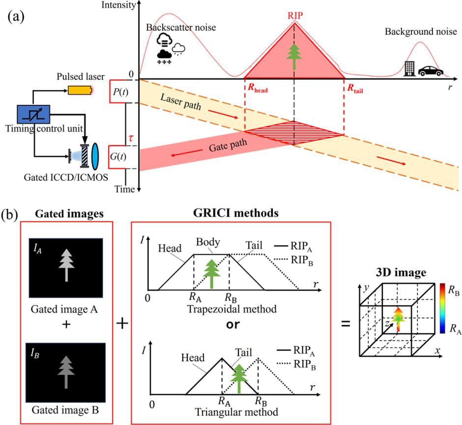
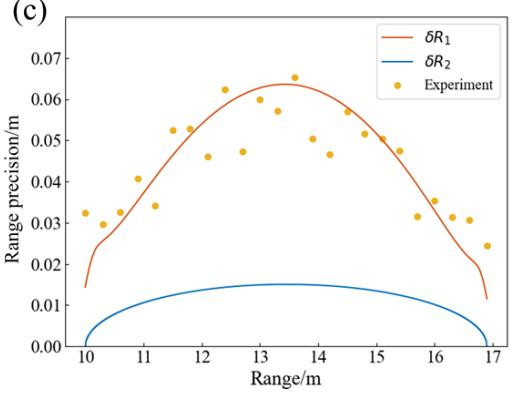
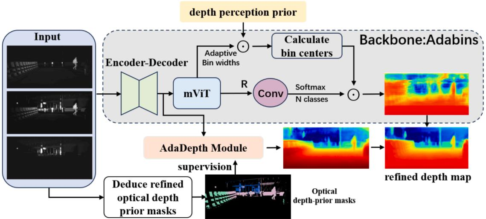
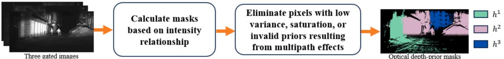
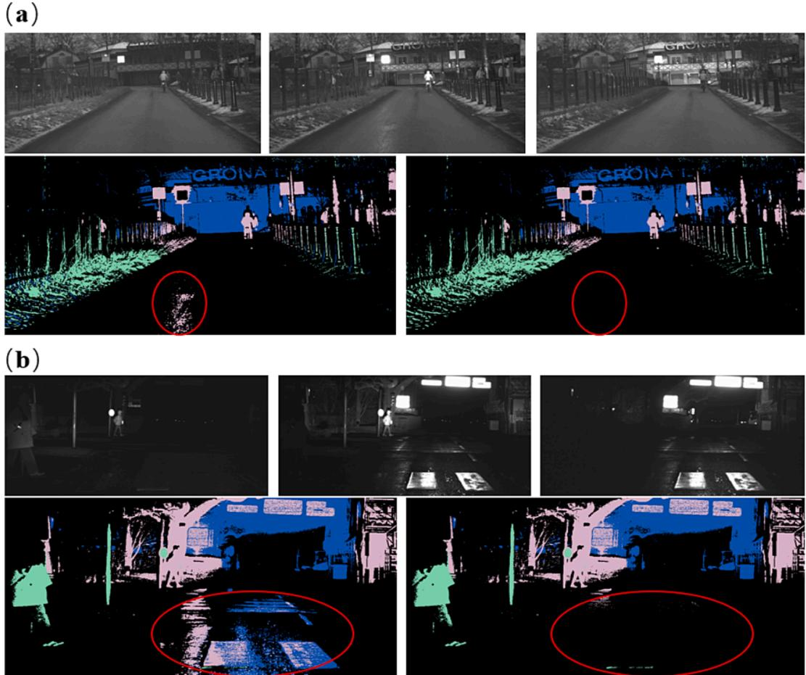
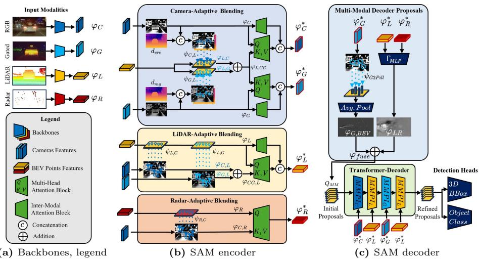

Literature Share
基于激光选通图像序列的真假目标识别
从物理回波建模、三门深度先验到自适应感知融合
Laser gated imaging
3D range-gated imaging
Depth prior
Gate attention
文献1 + 文献4 + 文献2
汇报主线：物理机制 → 深度先验 → 感知融合
01 / 08
Motivation
研究问题：从可采集回波中识别真假目标
普通 2D 图像
主要提供外观纹理，面对平面假目标时容易被完整轮廓和贴图迷惑。
激光选通图像
不同 gate 对应不同距离响应，图像强度中隐含目标的深度结构。
真假目标识别
真 3D 目标呈现深度相关结构变化，平面假目标主要表现为整体回波衰减。
真 3D 目标
不同部位处于不同深度，三个选通门中目标结构和亮度分布会发生空间变化。
Gate 1
Gate 2
Gate 3
平面假目标
整个反射图位于近似同一深度，多个 gate 中应保持完整轮廓，主要亮度逐渐变弱。
Full
Full
Full
核心：不是直接使用理想深度图，而是利用可实际采集的 gated intensity stack。
02 / 08
Paper 1
选通成像的物理基础：强度关系中包含距离信息

Source: Fig. 1, Range precision prediction model for three-dimensional laser gated range-intensity correlation imaging.
这篇文献解决什么问题？
- 分析 laser range-gated imaging 的时空模型。
- 解释 GRICI 如何由至少两张 gated images 通过强度关系恢复距离。
- 说明 gate 图像不是普通照片，而是带距离选择性的回波采样。
对我的课题：真 3D 目标在不同 gate 中应呈现不同深度部位的响应。
03 / 08
Paper 1
距离精度受噪声、抖动和衰减共同限制
关键结论
- 传统模型常忽略光电转换、shot noise、temporal jitter、距离衰减和后向散射。
- 新模型在 13.45 m 处相对误差为 3.1%，传统模型为 76.9%。
- 实验中两目标距离差约达到 7 cm 才可分辨。
3.1%
proposed model relative error
76.9%
traditional model relative error
7 cm
separable range difference

Source: Fig. 5c, model prediction versus experiment.
仿真启发：Blender 数据集应加入门函数、距离衰减、噪声、gate overlap，而不是理想硬切片。
04 / 08
Paper 4
三张 gated images 可以被网络转化为深度估计
方法主线
- 输入：三张 gated images，只改变 laser pulse 与 gate pulse 的延时。
- 三个 gate 捕获不同但重叠的距离范围。
- 骨干网络改自 AdaBins，并引入 refined optical depth prior 与 depth perception prior。
它直接证明：gate stack 中包含可学习的深度线索。

Source: Fig. 1, Transformer-based 3D range-gated imaging method with multiple depth priors.
05 / 08
Paper 4
光学深度先验：从三门强度关系得到近/中/远区域

Source: Fig. 3, refined optical depth-prior from range-gated imaging.

Source: Fig. 4, multipath noise and prior refinement.
对网络设计的启发
- 根据三个 gate 的像素强度最大值，可得到近/中/远 depth zones。
- 需要处理 multipath effect 等物理噪声，否则先验会出错。
- 论文将光学先验作为监督和损失权重，提升深度估计。
- 恶劣天气下相较 Gated2Depth，RMSE 改善约 45%-60%。
对我的课题：可以把 gate 间强度关系作为真假识别的深度响应线索。
06 / 08
Paper 2
gated camera 在真实感知任务中具有补充价值

Source: Fig. 2, SAMFusion architecture.
SAMFusion 的核心思想
- 融合 RGB、gated NIR、LiDAR、radar。
- 在 BEV 空间中结合图像特征与距离传感器特征。
- 根据距离、天气和可见性自适应加权不同模态。
17.2 AP
dense fog pedestrian gain
15.62 AP
heavy snow pedestrian gain
50-80 m
long-range focus
07 / 08
Synthesis
三篇文献共同支撑我的研究设计
1
文献1：物理回波建模
说明 gated echo 的形成过程和精度限制，提醒仿真必须考虑噪声、抖动、衰减和散射。
2
文献4：深度先验学习
证明三张 gated images 可以形成 optical depth prior，并被 Transformer 类网络有效利用。
3
文献2：自适应融合
展示 gated camera 在复杂感知场景中的价值，并启发 gate-adaptive fusion / attention。
我的研究落点：构建真 3D 目标和平面假目标的 gate stack 数据，利用不同选通门中的深度响应差异，实现真假目标识别。
建议汇报收束语：激光选通的价值不是直接获得完美深度图，而是从可采集的多门回波强度中学习目标的真实三维结构。
08 / 08